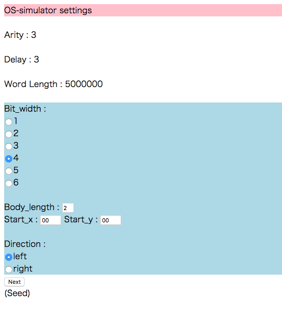

Read me!!
How to use our simulators
Step 1: Input airty, delay, word length
 This step inputs values of arity α , delay δ , and word length.
This step inputs values of arity α , delay δ , and word length.
The oritatami system's α is set to 3 and its δ is also set to 3 on our Heighway dragon.
Step 2: Select a bit width, body length, and start position

This step decides a size of the Heighway dragon that you want to make.
A value of Body length decides a number of times to repeat folding Xerox to draw a segment.